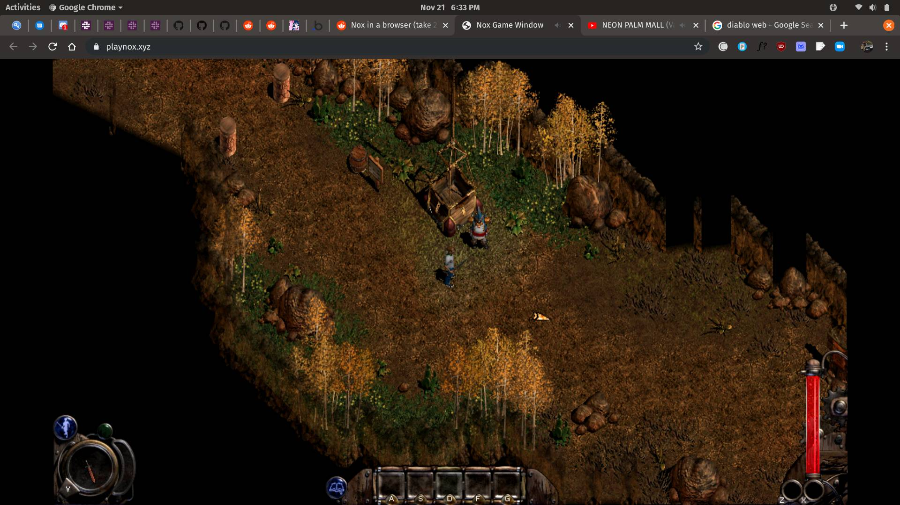

Why is WebAssembly Important?
Before WebAssembly existed, JavaScript was basically the only option for running code in a browser. JavaScript is great for a lot of things, but it was never built for heavy performance tasks like 3D rendering or real-time physics. Developers who wanted to build complex applications on the web were always hitting a ceiling with what JavaScript alone could handle. WebAssembly broke through that ceiling by giving developers a way to bring real performance to the browser without sacrificing security or compatibility. It changed what people thought was even possible on the web.
WebAssembly is also important because it makes the web more accessible to developers coming from other languages. A developer who has spent years writing games or simulations in C++ can now bring that work to the browser without starting over in JavaScript. This opens the door for entire ecosystems of software that were previously desktop-only to move to the web. Tools like AutoCAD, Figma, and even Google Earth have used WebAssembly to power their browser versions. That kind of cross-platform reach is a huge deal for both developers and users.

From a gaming perspective specifically, WebAssembly is a really big deal. Game engines like Unity and Unreal Engine can now export directly to WebAssembly, meaning a full game can run in a browser tab with no download or installation required. This lowers the barrier for players since all they need is a browser to jump into a game. It also gives developers a way to reach more people without going through app stores or platform restrictions. WebAssembly is a big reason why browser gaming has started to feel like a serious option again.